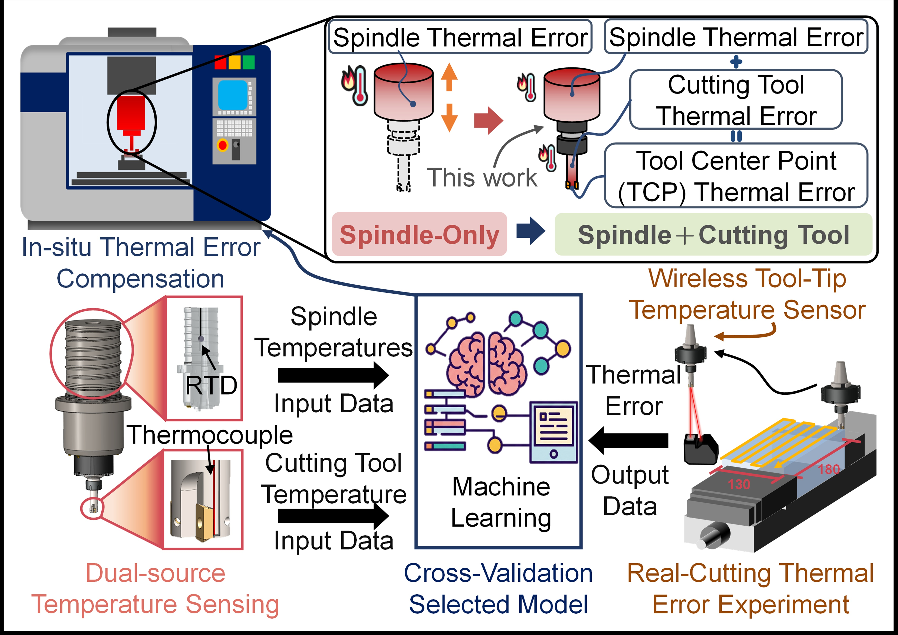
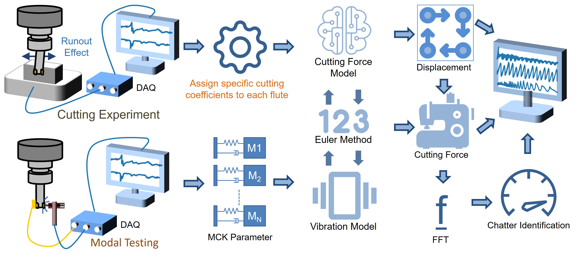
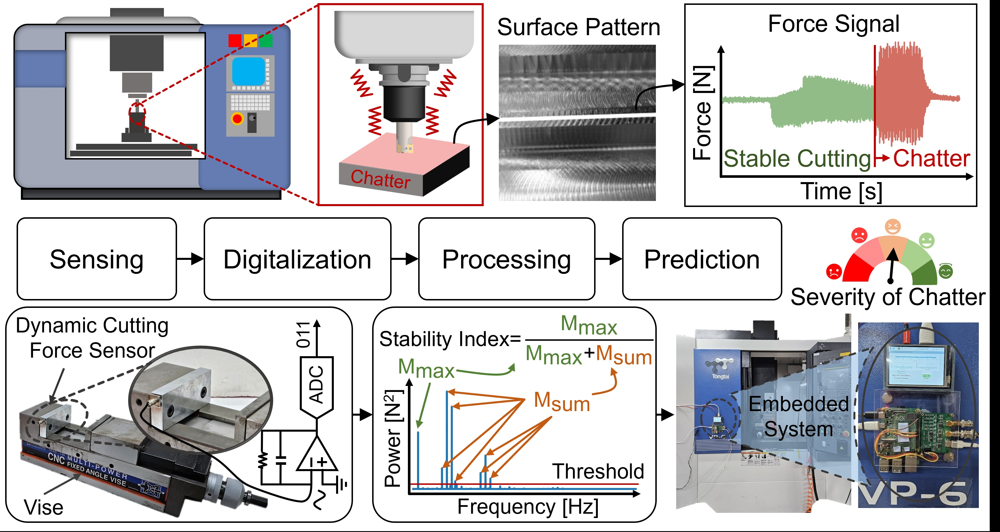
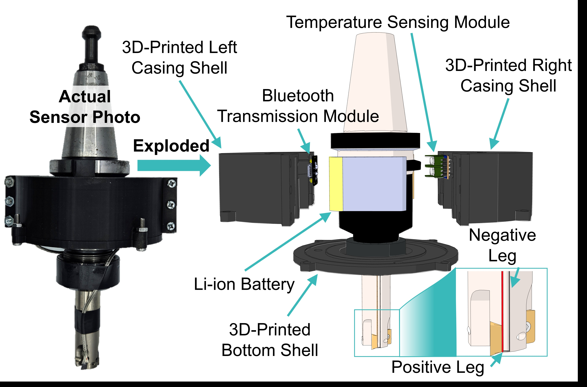
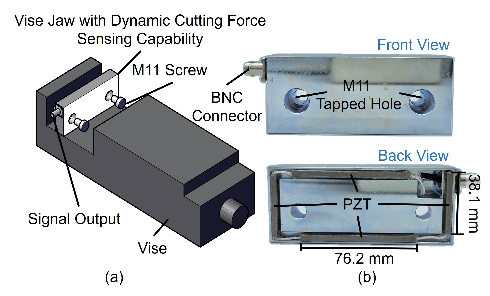
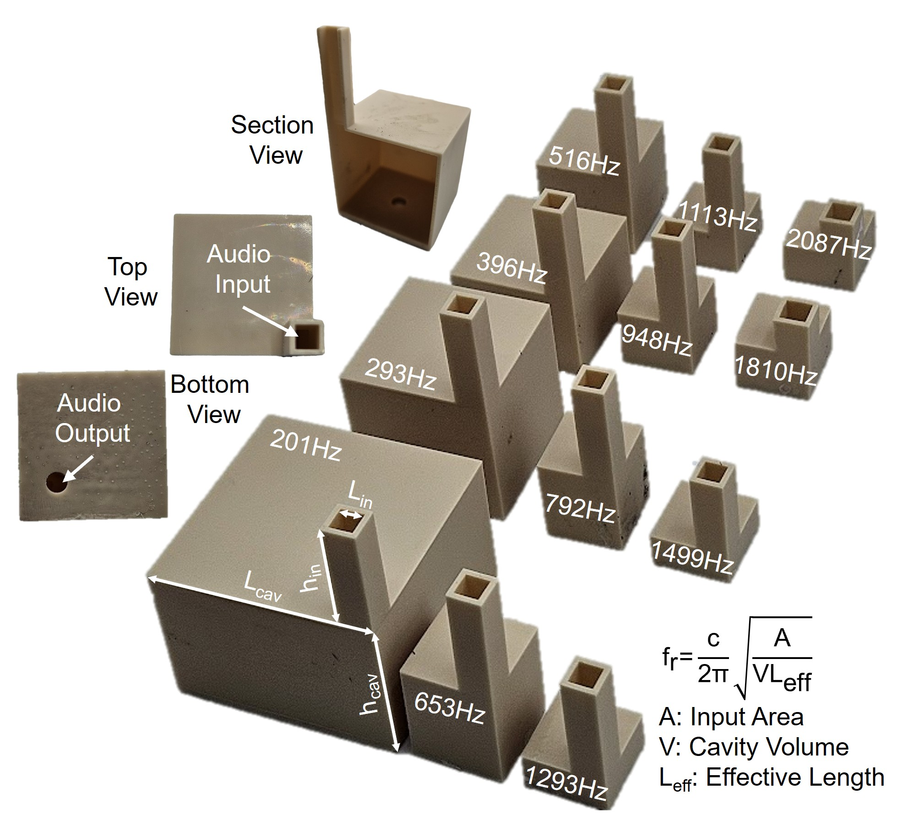

About Me

I received the B.S. degree in Bio-Industrial Mechatronics Engineering from National Chung Hsing University (NCHU), Taichung, Taiwan, in 2019, and the M.S. and Ph.D. degrees from the Institute of Applied Mechanics, National Taiwan University (NTU), Taipei, Taiwan, in 2021 and 2026, respectively.
My research focuses on smart manufacturing and the development of intelligent cyber-physical systems. During my undergraduate studies at NCHU, I established a solid mechatronics foundation by developing an automated bird tracking system. Building upon this practical experience, my graduate research at NTU deeply honed my expertise in multi-modal sensor design, system control, and edge computing. By integrating advanced machine learning techniques with custom-designed embedded sensors, I aim to develop robust, real-time monitoring solutions for precision manufacturing, while exploring the broader integration of these intelligent technologies into modern biomechatronic applications.
Honors & Awards
- Honorary Member of The Phi Tau Phi Scholastic Honor Society (M.S., NTU, 2021)
- Honorary Member of The Phi Tau Phi Scholastic Honor Society (B.S., NCHU, 2019)
Research
My core research focuses on "Heterogeneous Edge Computing Systems for Precision Machining." Below are the main areas of my expertise:
1. Cyber-Physical Thermal Error Compensation in Sustainable Dry Milling

This study addresses the thermal drift challenges in sustainable dry milling, where the absence of coolant alters the thermal boundary conditions and concentrates heat at the tool-workpiece interface. By developing a hybrid sensing framework coupled with Ridge regression algorithms, a robust thermal error model was established. This approach effectively mitigates high-temperature thermal deformations, reducing machining errors by over 80%.
2. Physics-Informed Chatter Prediction and Stability Analysis

This study investigates the complex dynamics of machining chatter by developing a physics-informed, semi-empirical cutting force model. To enhance prediction accuracy, the model explicitly incorporates tool runout effects—a critical factor frequently overlooked in idealized simulations. The proposed methodology significantly improves the reliability of offline Stability Lobe Diagrams (SLDs), enabling the optimization of cutting parameters to prevent regenerative chatter prior to the machining process.
3. Edge-Enabled Real-Time Chatter Monitoring System

This study presents a deterministic, real-time chatter detection framework deployed on a lightweight edge computing platform (Raspberry Pi). To achieve millisecond-level responsiveness, a low-complexity Stability Index (SI) algorithm was derived and implemented. This localized edge architecture overcomes the latency constraints inherent in centralized CNC controllers, ensuring highly responsive and reliable process monitoring during machining operations.
4. In Situ Wireless Temperature Sensing Module

This study focuses on overcoming the significant measurement lag associated with conventional spindle-mounted sensors. A custom wireless in situ temperature module was designed to directly capture the heat source at the tool tip. Utilizing a contact-based K-type thermocouple integrated with BLE transmission, the developed module provides the fast, high-fidelity thermal data essential for accurate, real-time error compensation in dry cutting environments.
5. Smart Vise for Dynamic Cutting Force Measurement

This study explores the engineering of a low-cost, embedded "Smart Vise" capable of capturing high-frequency dynamic cutting forces. By integrating piezoelectric (PZT) sensors directly into the work-holding setup, this single-axis design effectively isolates chatter frequencies from static clamping forces. The proposed system offers a highly practical and cost-effective alternative to conventional, expensive multi-axis dynamometers for industrial applications.
6. Physical Acoustic Filtering via Helmholtz Resonator Arrays

This study proposes a novel zero-power acoustic feature extraction mechanism utilizing a customized Helmholtz resonator array. By leveraging the physical resonance properties of the cavities, the system passively filters and amplifies specific frequency bands of interest before the signals reach the digital domain. This analog physical filtering approach significantly reduces the computational burden and power consumption of subsequent machine learning operations, paving the way for ultra-low-power intelligent acoustic sensors.
Publications
Journal Publications
- P.-H. Chen, H.-Y. Kao, M.-Z. Wu, P.-Z. Chang, and W.-C. Li*, “Wireless In Situ Tool and Wired Structural Thermal Sensor Fusion for Robust Dry Milling Error Compensation,” IEEE Sensors Journal, (Accepted), 2026.
- P.-H. Chen, P.-Z. Chang, and W.-C. Li*, “A Milling Stability Monitoring System Based on a Dynamic Force-Sensing Vise,” IEEE Sensors Journal, vol. 25, no. 21, pp. 40525–40536, Nov 1 2025.
- P.-H. Chen, P.-Z. Chang, Y.-C. Hu, T.-L. Luo, C.-Y. Tsai, and W.-C. Li*, “On the robustness and generalization of thermal error models for CNC machine tools,” The International Journal of Advanced Manufacturing Technology, vol. 130, no. 3, pp. 1635–1651, Jan. 2024.
- S.-Y. Lin, P.-H. Chen, P.-H. Hung, Y.-C. Hu, P.-Z. Chang, and W.-C. Li*, “Robust Tool Wear Modeling Based on Differential Wear Signature Analysis,” International Journal of Advanced Manufacturing Technology (IJAMT), vol. 141, pp. 4885-4894, Dec. 2025.
- P.-H. Hung, P.-H. Chen, S.-Y. Lin, W.-T. Hsu, B.-H. Chou, P.-Z. Chang, and W.-C. Li*, “Comparative Analysis of Steel Mechanical Properties for Generalized Cutting Energy Prediction in CNC Machining,” International Journal of Advanced Manufacturing Technology (IJAMT), vol. 140, pp. 4179-4190, Sep. 2025.
Conference Publications
- P.-H. Chen, T.-Y. Chen, S.-Y. Lin, P.-Z. Chang, T.-J. Lin, and W.-C. Li*, “Toward Zero-Power Feature Extraction for Speech Wakeup Using Helmholtz Resonator Array,” in the 23rd Int. Conf. on Solid-State Sensors & Actuators (TRANSDUCERS’25), Orlando, Florida, USA, Jun. 29-Jul. 3, 2025.
- C.-Y. Hsu, P.-H. Chen*, T.-Y. Chen, S.-Y. Lin, T.-J. Lin, C.-W. Yeh, C.-J. Wang, W.-C. Li, and P.-Z. Chang, “Performance Evaluation of MEMS Vibration Sensors for Throat Microphones,” in IEEE SENSORS 2024, Kobe, Japan, Oct. 20-23, 2024, pp. 1-4.
- P.-H. Chen, S.-Y. Lin, T.-J. Lin, P.-Z. Chang, and W.-C. Li*, “Machining Stability Estimation Based on Semi-empirical Cutting Force Model Incorporating Machine Tool Runout Effects,” in the 57th CIRP Conf. on Manufacturing Systems (CIRP CMS'24), Póvoa de Varzim, Portugal, May 29- 31, 2024, pp. 1752-1757.
- P.-H. Chen, T.-J. Lin, C.-W. Yeh, P.-Z. Chang, and W.-C. Li*, “Force-Sensing Intelligent Vise for Cutting Dynamics Monitoring in Machining,” in IEEE SENSORS 2023, Vienna, Austria, Oct. 29-Nov. 1, 2023, pp. 1-4.
- S.-Y. Lin, P.-H. Chen, T.-Y. Chen, P.-Z. Chang, and W.-C. Li*, “MEMS Microphone-Driven Near-Sensor Reservoir Computing for Lightweight Tool Wear Classification in Milling,” in the 23rd Int. Conf. on Solid-State Sensors & Actuators (TRANSDUCERS’25), Orlando, Florida, USA, Jun. 29-Jul. 3, 2025.
- H.-C. Hsu, S.-Y. Lin, P.-H. Chen, P.-Z. Chang, and W.-C. Li*, “Multi-Modal Sensing for Enhanced Surface Roughness Prediction in CNC Machining Using an Intelligent Vise,” in IEEE SENSORS 2024, Kobe, Japan, Oct. 20-23, 2024, pp. 1-4.
- C.-Y. Wang, P.-H. Chen, S.-Y. Lin, P.-Z. Chang, and Y.-C. Hu*, “Modelling Cutting Temperature and Tool Thermal Error in Dry Cutting under Different Cutting Parameters,” in the 57th CIRP Conf. on Manufacturing Systems (CIRP CMS'24), Póvoa de Varzim, Portugal, May 29- 31, 2024, pp. 1869-1874.
- S.-Y. Lin, P.-H. Chen, T.-J. Lin, P.-Z. Chang, and W.-C. Li*, “Rapid Tool Wear Modelling for Varying Cutting Parameters,” in the 57th CIRP Conf. on Manufacturing Systems (CIRP CMS'24), Póvoa de Varzim, Portugal, May 29- 31, 2024, pp. 1770-1775.
- W.-T. Hsu, P.-H. Hung, B.-H. Chou, P.-H. Chen, S.-Y. Lin, T.-J. Lin, Y.-C. Hu, P.-Z. Chang and W.-C. Li*, “Rapid Energy Consumption Modelling for CNC Based Milling Process,” in the 57th CIRP Conf. on Manufacturing Systems (CIRP CMS'24), Póvoa de Varzim, Portugal, May 29- 31, 2024, pp. 1764-1769.
Contact
Feel free to reach out to me for academic collaborations or inquiries.